InvisionApp Tutorials
These are quick tutorials to help explain the process of setting up and distributing InvisionApp prototypes as well as submitting to box.psu.edu and ELMSLN Studio.
InVision Video Tutorial (24:08)
Prepare images for upload
If you are working from photos that are not the correct size and aspect ratio, you will need to crop them to prepare them for upload.
There are free image cropping tools included with Mac and Windows operating systems:
To keep organized, it helps to number your files. If you forgot an image and include it after the fact, you can use a decimal instead of renaming all of the files.
Set up a new iPhone project
- Create a Prototype Project
- Select an iPhone template
- Upload your cropped images.
- Set your hotspots. You may need to watch InvisionApp tutorials to learn how to do this properly.
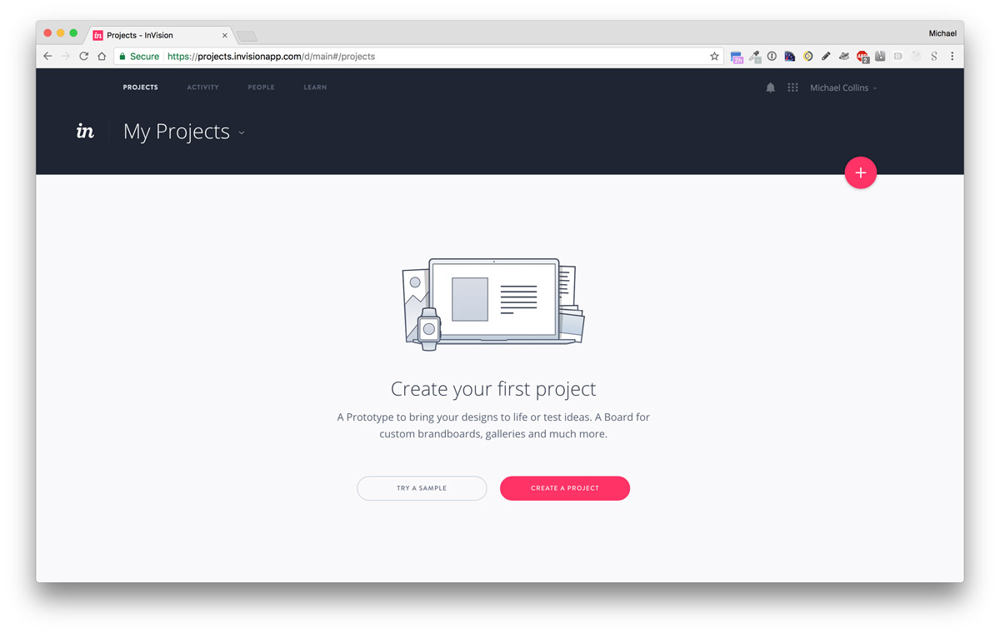
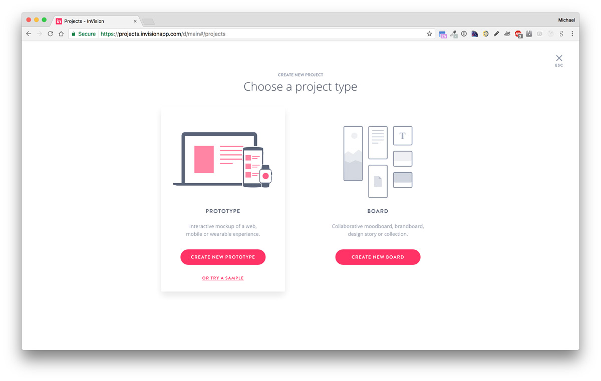

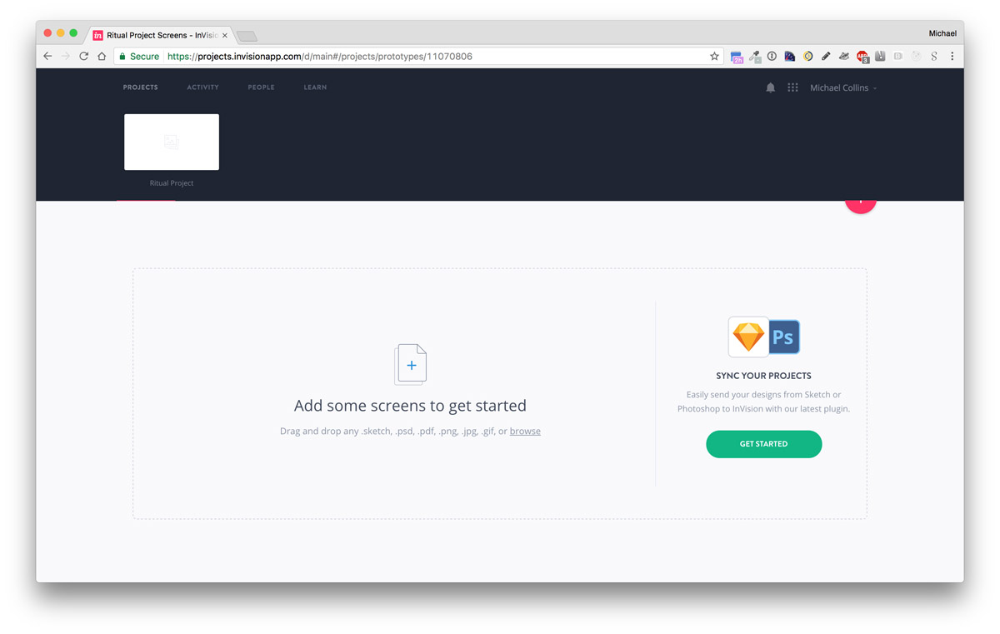
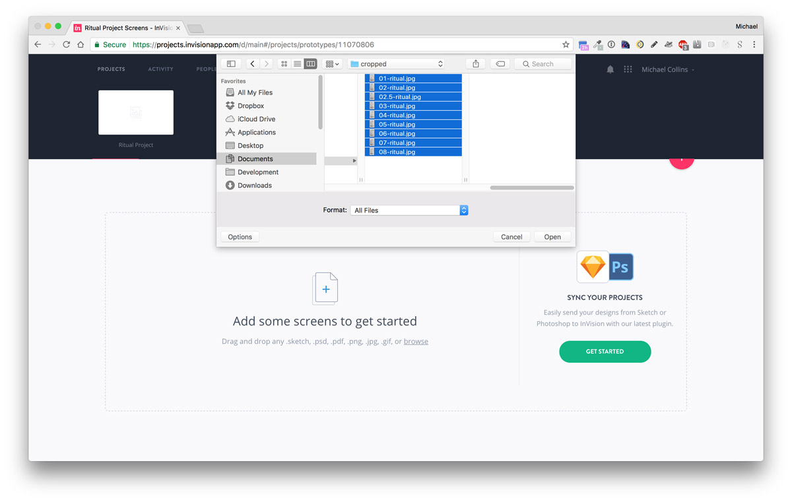
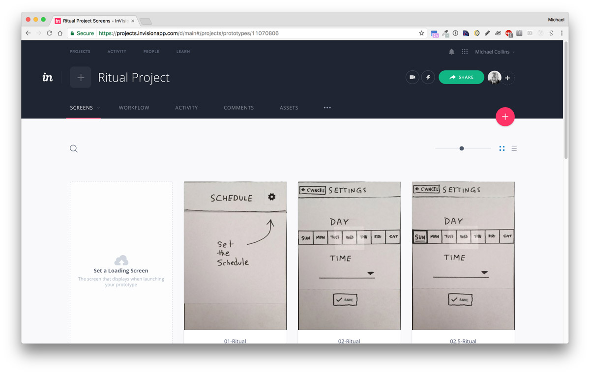
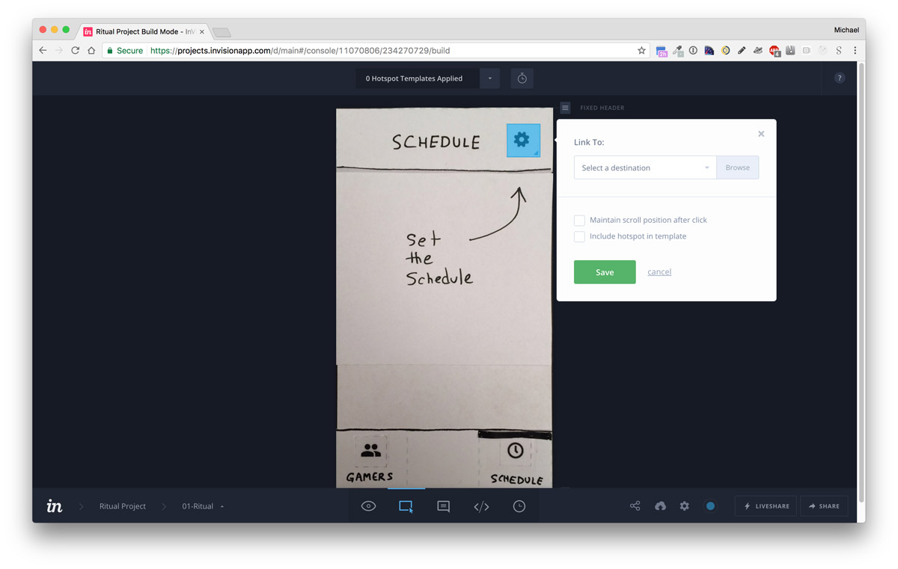
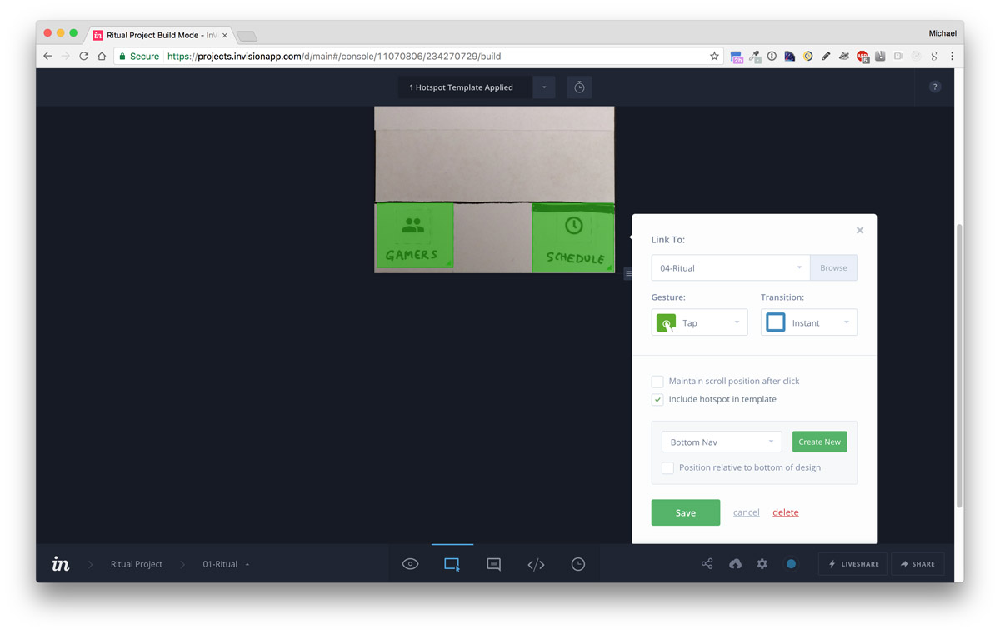
Downloading a prototype ZIP file
In the main navigation bar, choose the ellipsis button (three horizontal dots) and choose Download Prototype. Choose to download the project as a ZIP file.
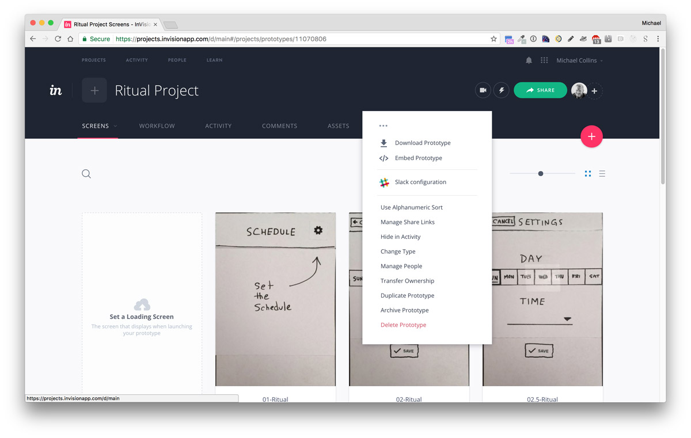
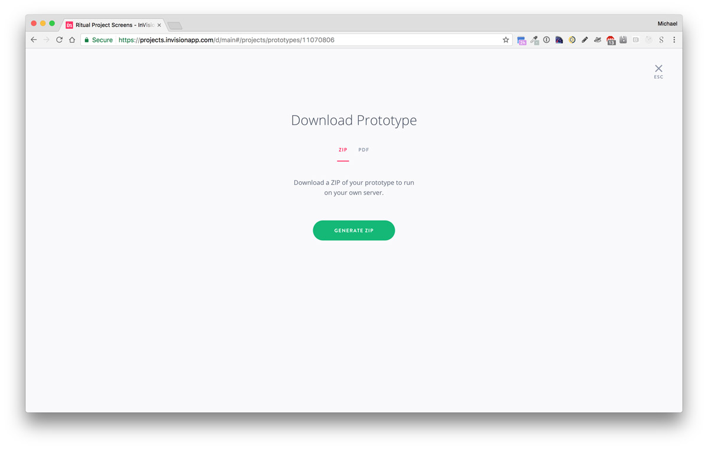
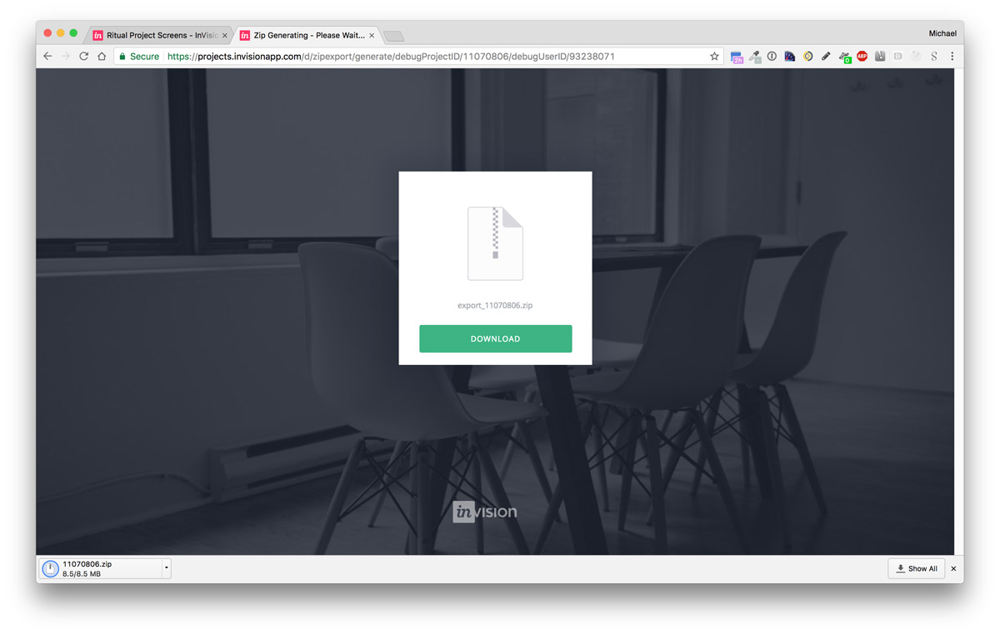
Share prototype link
- On the project view, click on the big green share link on the top left.
- Click on the public share link to copy it to your clipboard. (This sets your computer so the next time you perform a paste command, it will paste the link)
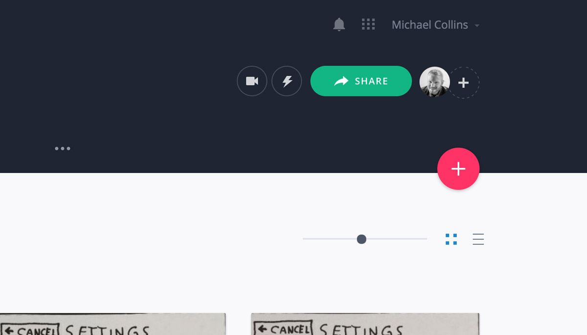
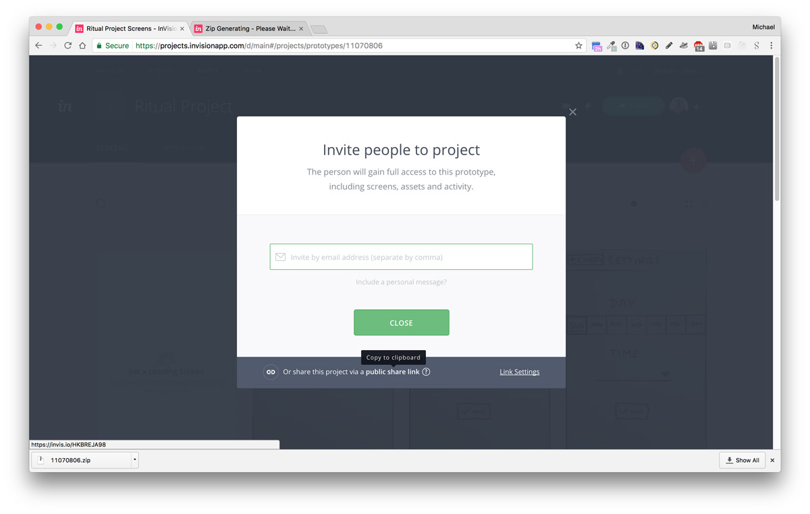
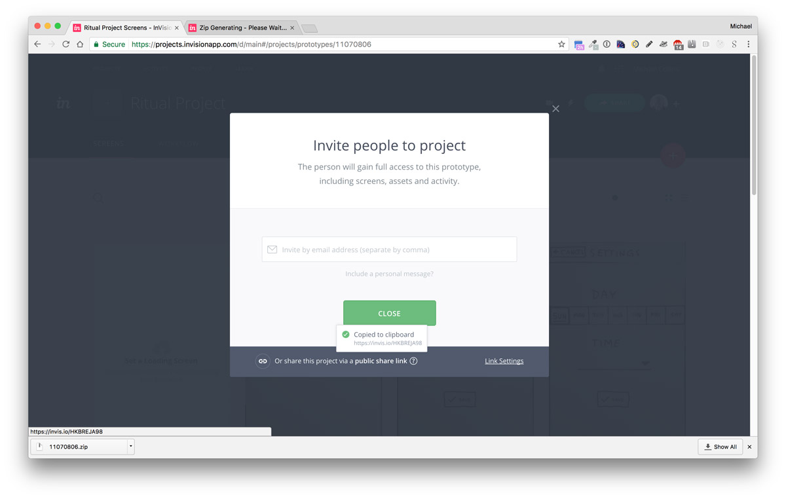